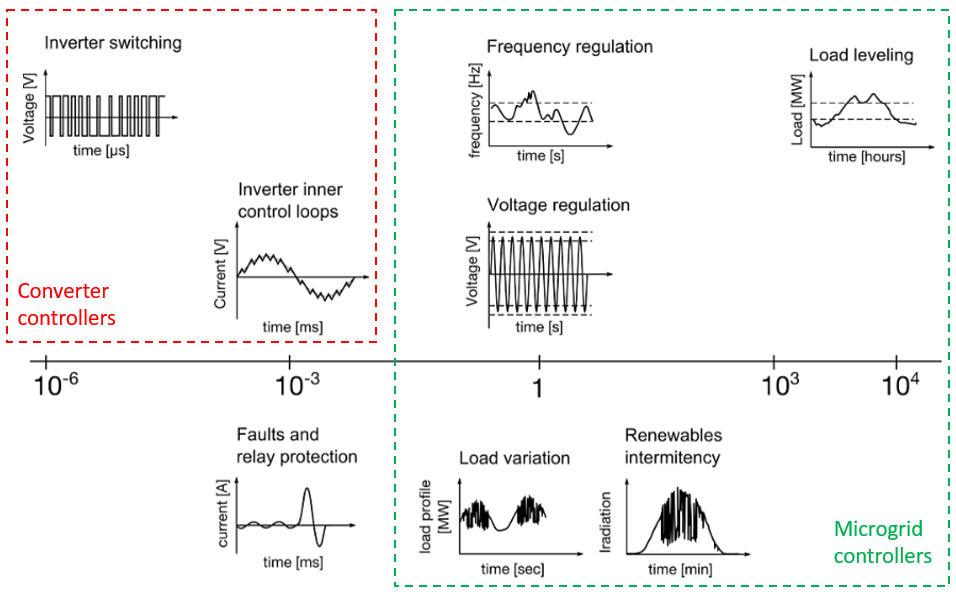
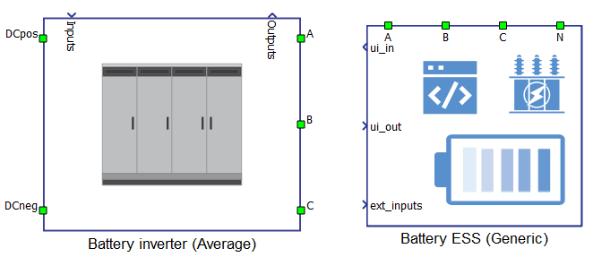

Microgrid Toolbox DER components guide
Comprehensive guide on Microgrid Toolbox DER component types and when to use them.
Introduction
For a first-time user of the Microgrid toolbox (see more here), it may be an overwhelming experience to decide between the different models of the same Distributed Energy Resources (DER) component. What are these Legacy (Switching, Average) and Generic models? The decision of which component to use depends mainly on the type of controller/device under test (DUT). Table 1 serves to provide guidance in your decision-making considering the DUT.
| DUT type | DER type |
|---|---|
| Converter controller | Legacy (Switching) |
| Microgrid/EMS/BMS controller | Generic, Legacy (Average) |
Different needs may additionally affect your decision for choosing the DER type for your project, such as speeding-up the modeling setup, bridging the domain-specific knowledge gap, or reducing the HIL hardware utilization. The project scope can also be a deciding factor. Are you testing just system-level control or is there component-level control involved too? Is your project purely system integration or are there design/R&D elements involved? Table 2 addresses the DER component features with respect to the mentioned needs and the project scope.
| DER model | Automatic model tuning | Dedicated communication interface | Standardized DER functions | Unlocked models | Machine solver utilization |
|---|---|---|---|---|---|
| Generic | ✓ | ✓ | ✓ | ||
| Legacy | ✓ | ✓ |
In most microgrid applications Generic DER components will serve your needs better than Legacy. As shown in Table 2, they can self-tune the control and circuit parameters as a function of nominal values. Furthermore, generic components have functionalities more commonly met in real-life DERs. Those are functionalities that a system-level controller “expects” to exist in order to have a fully integrated and functional system. To mention some: voltage and frequency droop, ramping, LVRT, and voltage and current protection. Self-tuning and grid support features are a life saver if you have little to no experience in control engineering and power electronics or you simply don’t have time to work your way up from scratch.
PE controllers
From a microgrid system perspective, the converter controllers represent low-level or DER component-level control. They have explicitly defined outputs for gate control of each semiconductor switch. In this case, for both design and testing purposes, the power stage should be modelled using Legacy switching components where each PWM output can be mapped to a HIL digital input pin that corresponds to a particular switch in the topology. If you are still in the controller design stage, the added value of using Legacy switching models comes from the pre-implemented control subsystems for major DER applications. You can unlink these control sub-systems from the library and modify them freely for your own project. Legacy components offer extensive parametrization for controller gains and converter output filter values.
There are projects where after you have validated your converter controller within a single DER plant, you will need to test it at the system level. Some of these tests involve the interaction between DER controlled by your DUT and other independently controlled DERs. In such cases it makes sense to use average/generic components to model those independent DERs. They are behaviorally identical to switching models, but they utilize far less hardware resources as shown in Table 3 and Table 4. The Switching and average models of grid-connected battery inverter application note demonstrates the behavioral identity between the switching and average DER battery models.
Microgrid/EMS/BMS controllers
Microgrid controllers are the top-level controllers responsible for steady-state regulation of voltage and frequency as well as load/energy management. Relative to power electronics models, their slower dynamics can be matched by average/generic DER types. Figure 1 can give you some idea of critical time constants of interest for microgrid controllers among other applications and controller types.

System-level communications testing
In real life, once you’ve tested the basic functionality of your microgrid controller, the next thing you want to do is test the communication layer. The communication delays can have an impact on the overall controller performance. Besides the controller, in a real system there are other network devices like Multi-protocol gateway for DERMS, adding the interoperability problem to the mix. By having a dedicated communications UI (i.e. Battery ESS (Generic) UI or Diesel Genset (Generic) UI), the Generic components are unmatched in communications testing and troubleshooting interoperability issues.
Unlike the DER component, its respective UI component is not a locked subsystem. Inside, you will find all outputs that the microgrid controller monitors, as well as all the inputs it issues to control the DER. During the development of generic components special care was taken to ensure that all inputs and outputs that are essential for field operation are accounted for in the simulation. You can focus on mapping the communication layer without the need to worry that some function listed in your controller’s Modbus map is not supported by the DER component. In other words, the concept of Generic components emulates real-life system integration experience by providing you with an off-the-shelf DER black box that is ready to be commissioned. As long as you have the communication protocol map supplied by the DER vendor, and the communication protocol is supported in our library, you are all set for testing & commissioning.
Hardware utilization
Large microgrid and power system models increase HIL device utilization. With large models, you may want to maximize the use of average/generic models in order to conserve hardware resources. Table 3 and Table 4 illustrate the trade-off and the gains in hardware resources for battery and diesel genset DERs respectively.
| HIL hardware resources | Legacy (Switching) | Legacy (Average) | Generic |
|---|---|---|---|
| No. of processing cores | 2 out of 3 | 1 out of 3 | 1 out of 3 |
| Power electronic converter utilization | 3 out of 3 | 0 out of 3 | 0 out of 3 |
| SP sources utilization | 0 out of 16 | 4 out of 16 | 3 out of 16 |
| Max. matrix memory utilization | 77.61% | 4.74% | 5.71% |
| Max. time slot utilization | 73.75% | 62.5% | 73.75% |
| Simulation step, circuit solver | 1 µs | 1 µs | 1 µs |
| Signal processing, execution rate | 100 µs | 100 µs | 100 µs |
| HIL hardware resources | Legacy | Generic |
|---|---|---|
| No. of processing cores | 1 out of 3 | 1 out of 3 |
| Power electronic converter utilization | 0 out of 3 | 0 out of 3 |
| Machine solver utilization | 1 out of 1 | 0 out of 1 |
| SP sources utilization | 0 out of 16 | 3 out of 16 |
| Max. matrix memory utilization | 1.37% | 1.2% |
| Max. time slot utilization | 51.25% | 42.5% |
| Simulation step, circuit solver | 1 µs | 1 µs |
| Signal processing, execution rate | 200 µs | Multirate (500 µs, 100 µs) |
Of special significance in Table 4 is that the Diesel Genset (Generic) model does not utilize the FPGA machine solver, unlike the Diesel Genset component. The machine solver is a precious resource that should be saved for demanding applications, like power electronics-based motor drives. For synchronous generators with prime movers in a majority of microgrid applications, the circuit solver rarely, if ever, needs extremely small time steps (1 µs - 10 µs). Hence, with generic components you can easily build models with multiple gensets normally encountered in system-level applications without worrying about spending machine solver resources.
To further illustrate the hardware resource savings you can try an exercise on one of our microgrid installation examples. The minimum HIL device required to run the example model described in Plug-and-play microgrid library and testing of microgrid controller is a HIL602+. This can easily be reworked into a more compact model that can run on a HIL402 by using either average or generic DER components. Let us know if you wish to obtain the optimized model with generic components.
Exceptions for using Legacy components
There are still instances where you will want to resort to the use of Legacy (Average) components, especially if there are system design elements in your project. One example would be if you need to integrate a battery and the inverter as separate components. In this case you will need to use the Battery Inverter (Average) component as it is open on the DC link side and can accept battery models of any type, while Battery ESS (Generic) is a lumped model (battery + inverter) and therefore is open only towards the AC/grid side. This is just one example, but Legacy components, being unlocked subsystems, are the recommended alternative whenever you encounter design limitations with Generic components.

Authors
[1] Ognjen Gagrica